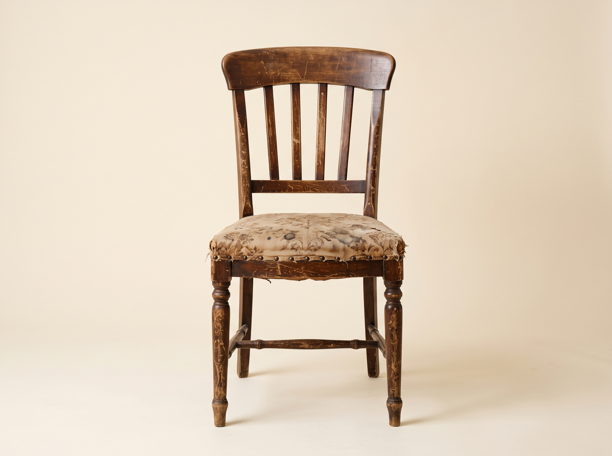
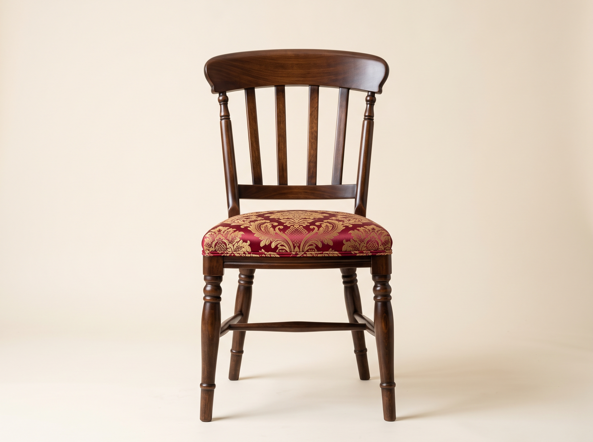
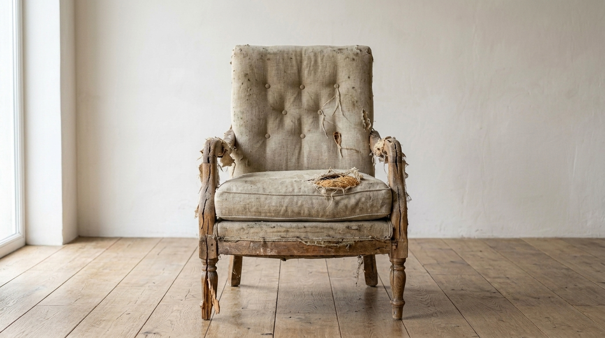
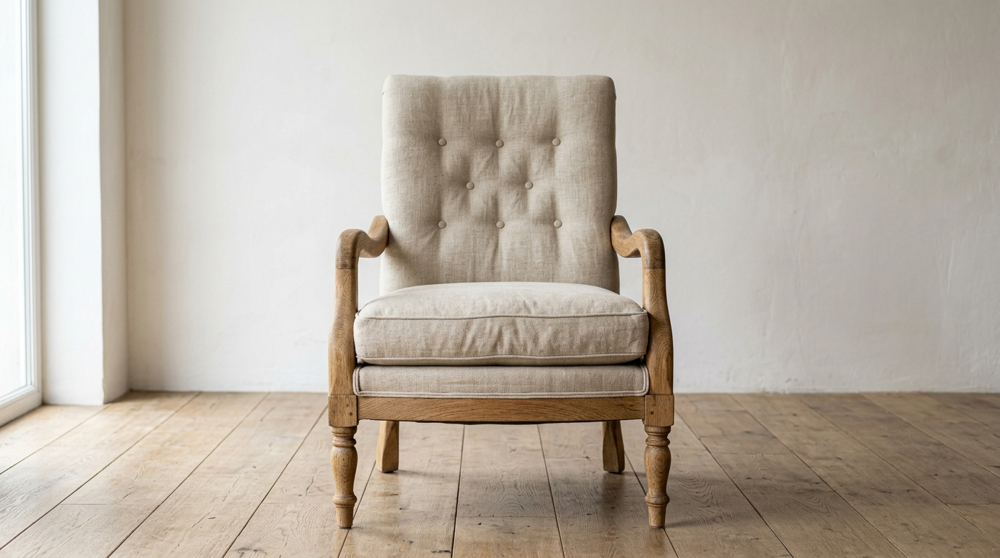
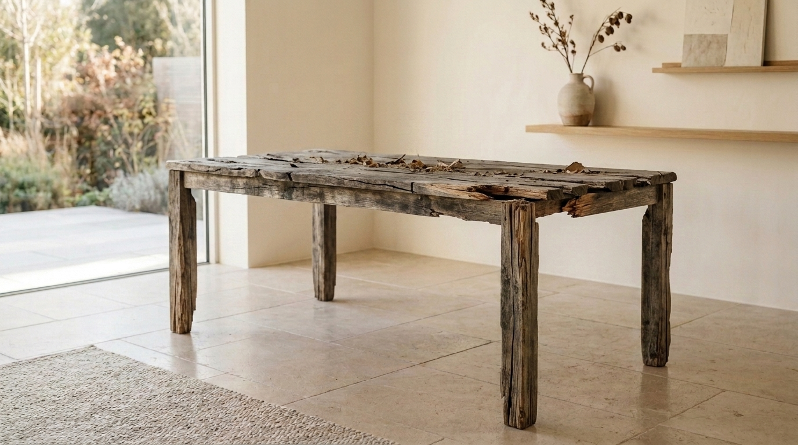
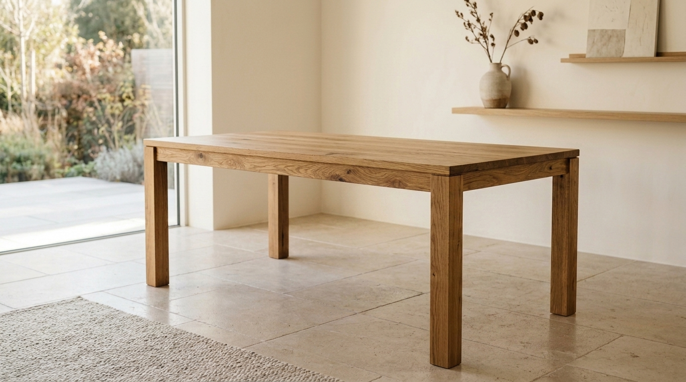
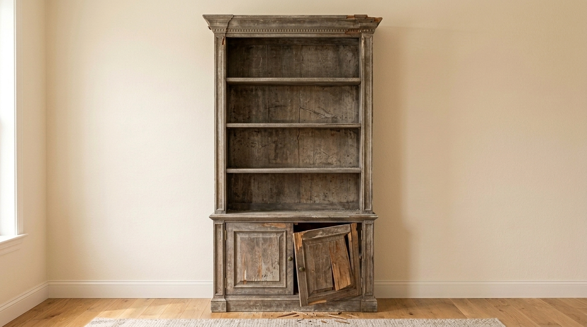
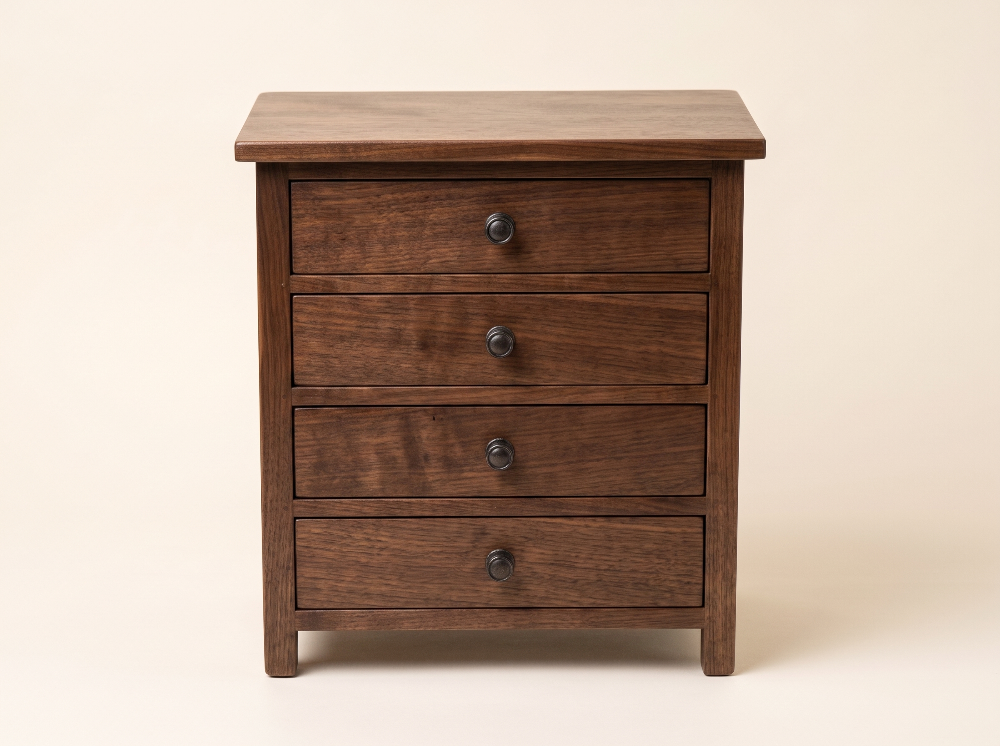

Antes
DespuésSilla de comedor clásica. Roble natural y lino crema

Curso insignia
Aprendé a devolverle la vida a cualquier mueble, incluso si nunca restauraste uno antes.

¿Este curso es para vos?
Si te identificaste con alguna de estas situaciones, este curso fue pensado para vos.
InscribirmePrograma
Aprendés a leer el mueble antes de tocarlo. Identificamos la especie de madera, el estilo de la pieza y mapeamos cada daño existente.
Encolado de juntas flojas, reposición de faltantes y estabilización de la estructura portante. Recuperamos lo que se puede salvar.
Preparación de la superficie respetando la veta y las marcas que vale la pena conservar. La base de cualquier buen acabado.
Técnicas de aplicación de lacas, texturas y colores contemporáneos. Aprendés a elegir el acabado que mejor le queda a cada pieza.
Pátinas, chalk paint y técnicas de estilo vintage para un resultado con carácter y personalidad propia.
Selladores y terminaciones que garantizan que el trabajo dure décadas. El paso que la mayoría omite y que hace toda la diferencia.
Resultados
Proyectos reales. El mismo mueble, dos momentos.

Antes
DespuésSilla de comedor clásica. Roble natural y lino crema

Antes
DespuésMesa de luz Mid-Century. Teca satinada y verde sabio

Antes
DespuésTaburete rústico. Pino lavado y acabado mate

Antes
DespuésCajonera antigua. Chalk paint blanco y tiradores de madera

Empezá hoy y aprendé a restaurarlo con tus propias manos.
Inscribirme ahora